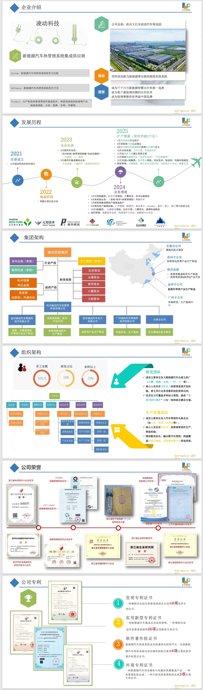
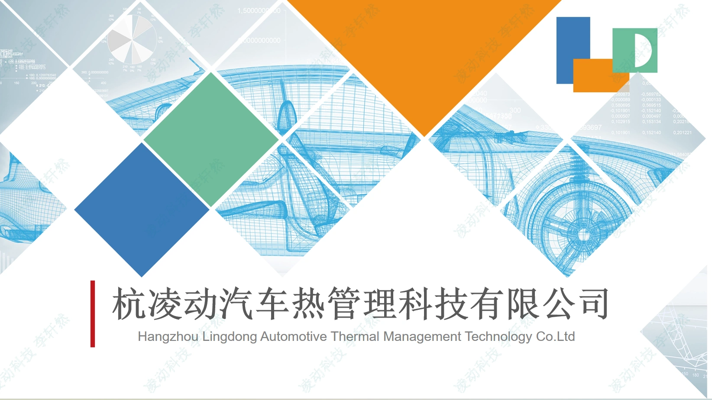
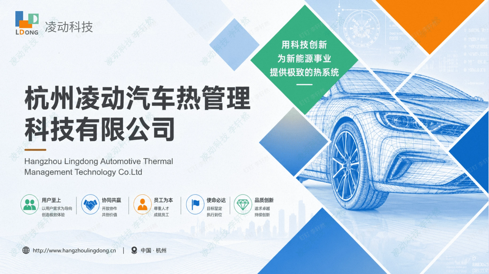
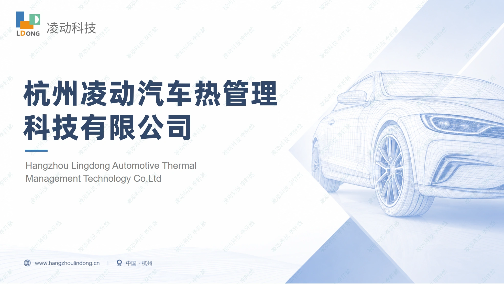
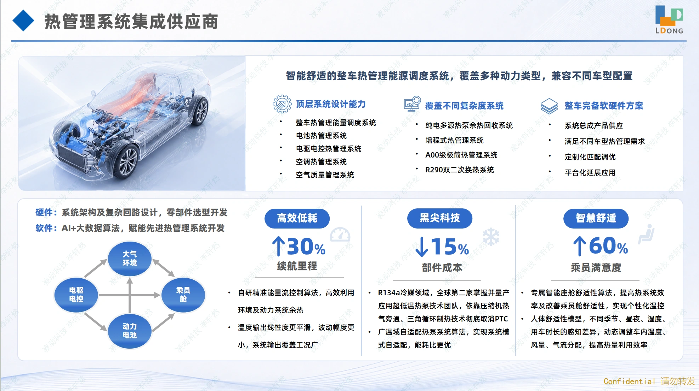
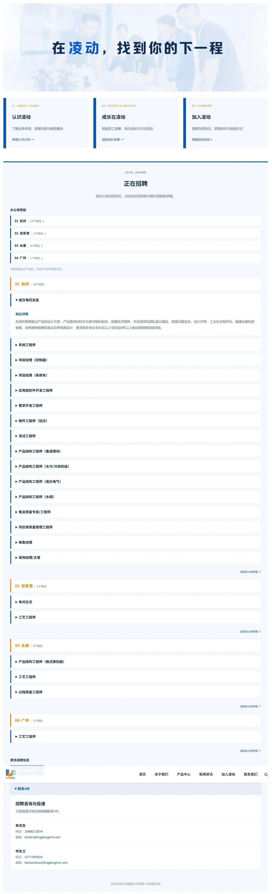
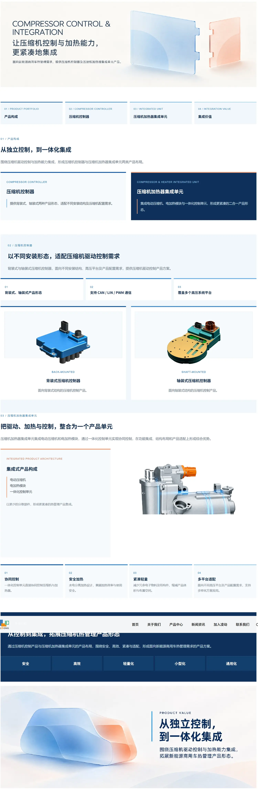
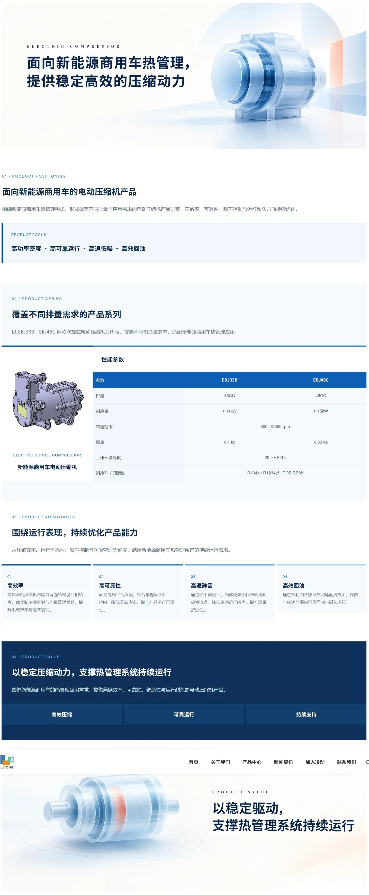
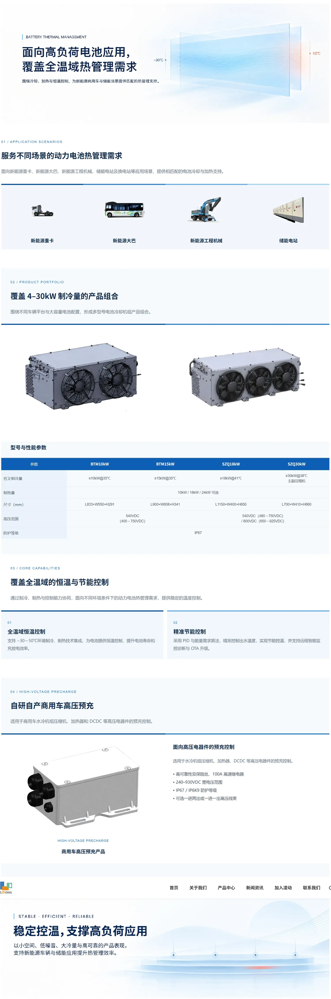

ABOUT US / 企业介绍
围绕企业简介、企业文化、发展历程、产品谱系、研发制造与质量能力等内容，重新组织页面信息与阅读顺序。


页面可滚动浏览，点击图片可查看完整长图。
围绕企业信息分散、官网内容持续更新的实际需要，我参与梳理企业介绍、产品与招聘等内容，并配合页面视觉素材和 CMS 更新，让企业信息在官网重点页面中获得更清晰的呈现。

项目从官网日常维护开始，逐渐延伸到企业信息与重点页面的内容整理。
从 Banner、产品图片和企业信息等更新出发，我开始进一步关注页面里不同内容的顺序、视觉素材的使用，以及企业、产品与招聘信息如何被清楚地呈现。
企业介绍材料经过多轮迭代，逐步形成更清楚的内容结构与制造业表达。
我参与整理企业发展、业务布局、产品、研发与制造、质量能力及基地等信息，并配合调整材料内容结构与视觉表达，为官网页面更新提供内容基础。
企业介绍材料：持续更新




从企业介绍页开始，持续更新产品中心与招聘等重点页面。
以下截图来自实际上线界面，呈现官网内容与重点页面视觉的持续更新。
围绕企业简介、企业文化、发展历程、产品谱系、研发制造与质量能力等内容，重新组织页面信息与阅读顺序。

页面可滚动浏览，点击图片可查看完整长图。
岗位信息与招聘内容的实际页面呈现。

从系统信息到具体产品页面，呈现不同层级的产品内容。点击截图可查看完整页面。







内容结构、视觉素材与页面实现，需要一起落到实际 CMS 中。
我在既有网站架构和 CMS 能力范围内推进页面更新，并探索通过 HTML 实现更灵活的内容呈现。